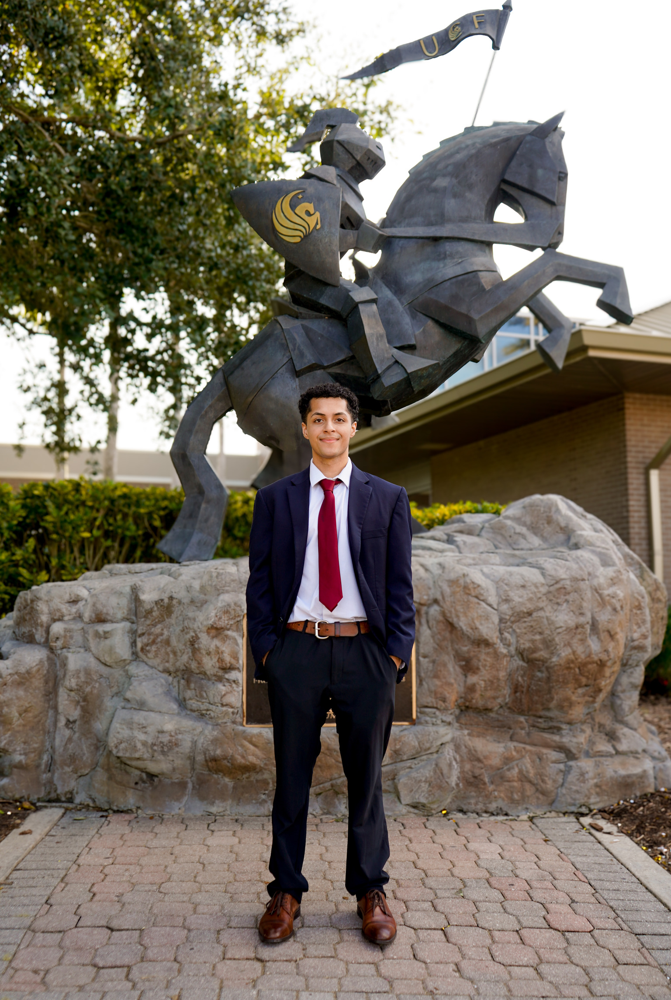

Hello, I'm Kevin.
I grew up a military brat, moving every two or three years, eleven of them in Germany. You learn to read a room fast when you are always the new kid. The first thing I remember building was not software. In middle school I started a Minecraft club that drew more than forty students after school. That club is the one I still think about. I was not the best player in it. What I was good at was figuring out why people showed up and making it worth their time to come back.
That instinct followed me into school. I studied Information Technology at UCF, in the College of Engineering and Computer Science, and finished in December 2025. The coursework was technical, but the part that kept pulling at me was the question underneath the code. Who is this for, and does it help them.
That question is why I started Loop. UCF had no student organization built around product management, so I made one. I recruited an officer team, ran workshops, brought in speakers from NBCUniversal, Disney, and Google, and shipped the club's own site. More than sixty students came through it.
Professionally I move between the product side and the data side, and that combination is the most useful thing about me. At NBCUniversal I scoped Fandango FanClub's MVP and led user research with more than a thousand participants for a SportsEngine redesign, then joined the data science team to tune models and automate prediction pipelines across 3,500 facilities. At Kogna.IO I helped launch Nodes, a modular workspace. At Disney I have worked on guest experience analytics and product strategy, most recently authoring requirements for a forecasting tool covering more than forty characters across four parks.
Outside assigned work, I build. Arrival makes a language plan scoped to one trip, teaching the words and situations you will actually hit instead of a whole language. Hindsight is a regret database for travelers, where people log what they wish they had done differently so the next person reads the pattern before they go.
The short version is on the timeline. If you would rather talk, I am easy to reach.